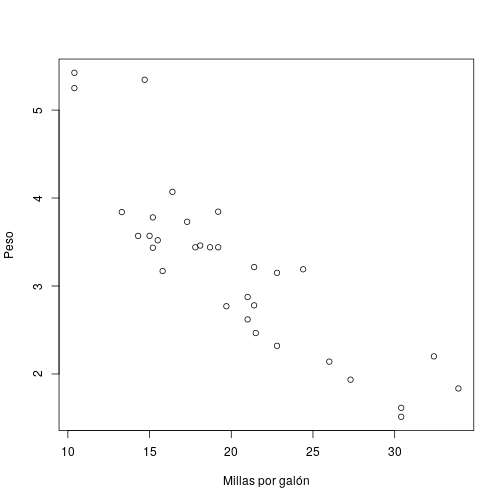
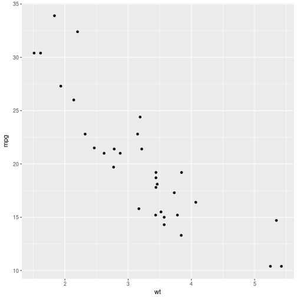
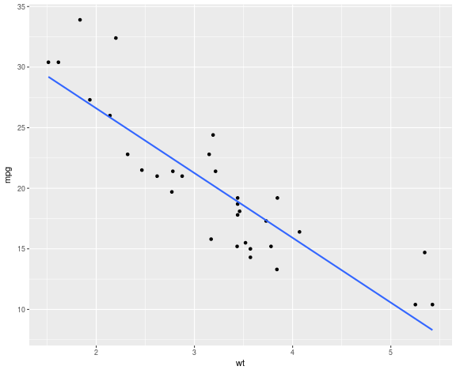

Modelo de Regresión
Regresión Lineal
Valentín Vergara Hidd
Uso de Software en Investigación Social
Datos para esta clase
Datos desde R.
Vamos a cargar un dataframe que viene precargado en R.
data(mtcars)
Para saber qué contiene el datafreme, usamos la ayuda de R; y luego utilizamos la función str.
help(mtcars)
str(mtcars)
## 'data.frame': 32 obs. of 11 variables:
## $ mpg : num 21 21 22.8 21.4 18.7 18.1 14.3 24.4 22.8 19.2 ...
## $ cyl : num 6 6 4 6 8 6 8 4 4 6 ...
## $ disp: num 160 160 108 258 360 ...
## $ hp : num 110 110 93 110 175 105 245 62 95 123 ...
## $ drat: num 3.9 3.9 3.85 3.08 3.15 2.76 3.21 3.69 3.92 3.92 ...
## $ wt : num 2.62 2.88 2.32 3.21 3.44 ...
## $ qsec: num 16.5 17 18.6 19.4 17 ...
## $ vs : num 0 0 1 1 0 1 0 1 1 1 ...
## $ am : num 1 1 1 0 0 0 0 0 0 0 ...
## $ gear: num 4 4 4 3 3 3 3 4 4 4 ...
## $ carb: num 4 4 1 1 2 1 4 2 2 4 ...
Datos simulados
También trabajaremos con datos simulados, tal como las clases anteriores. Para ello, crearemos el siguiente dataframe, con datos de 1000 pacientes en tratamiento y cuya variable dependiene es una escala de dolor:
regresion<-data.frame(id = 1:1000,
dolor = rnorm(1000, mean = 65, sd = 15),
edad = sample(40:80, 1000, replace = T),
diagnostico = sample(c("Ébola", "Cáncer", "Lepra", "Bulimia"),
1000, replace = T),
drogas = sample(c("Sí", "No"), 1000, replace = T),
hr_trabajo = rpois(1000, 40))
Para verificar los datos, usamos la función head.
head(regresion)
## id dolor edad diagnostico drogas hr_trabajo
## 1 1 48.28497 57 Cáncer Sí 35
## 2 2 61.30041 71 Ébola Sí 55
## 3 3 66.32513 55 Lepra Sí 43
## 4 4 90.67203 54 Lepra No 42
## 5 5 43.91336 50 Lepra Sí 42
## 6 6 52.12640 59 Cáncer No 36
Un paso previo: correlación.
Dos variables numéricas.
Cuando tenemos dos variables numéricas, \(X\) y \(Y\), establecemos su correlación como:
\[ r_{xy} = \frac{cov_{xy}}{s_{x}s_{y}} = \frac{\sum^{n}_{i = 1}(x_{i} - \overline{x})(y_{i} - \overline{y})}{(n-1)s_{x}s_{y}}\]
Noten que si invertimos el orden de \(Y\) y \(X\), no obtendremos diferencias. Esto implica que esta prueba no distingue entre variables dependientes e independientes
Correlación en R.
Por ejemplo, si utilizamos el dataframe [mtcars] y buscamos la correlación entre millas por galón y peso del auto:
cor.test(mtcars$mpg, mtcars$wt)
##
## Pearson's product-moment correlation
##
## data: mtcars$mpg and mtcars$wt
## t = -9.559, df = 30, p-value = 1.294e-10
## alternative hypothesis: true correlation is not equal to 0
## 95 percent confidence interval:
## -0.9338264 -0.7440872
## sample estimates:
## cor
## -0.8676594
Graficando en una nube de puntos.
plot(mtcars$mpg, mtcars$wt, xlab = "Millas por galón", ylab = "Peso")

Modelo Lineal
El modelo más simple
El modelo más simple con el que vamos a trabajar tiene la forma: \[ y_{i} = \beta_{0} + \beta_{1} x_{i} \] Una vez estimado, este modelo tomará la siguiente forma: \[ E(y) = \hat{\beta}_{0} + \hat{\beta}_{1} x_{i} + \epsilon_{i}\]
Se debe recordar que lo que buscamos es una ecuación de la recta que pase por la mayor cantidad de puntos, es decir:
\[ \min \epsilon_{i} = y_{i} - \hat{\beta}_{0} - \hat{\beta}_{1}x_{i}\]
Estimación en R.
Utilizamos la función lm (linear model) para crear un objeto que contenga lo siguiente:
- El modelo a estimar.
- El \(R^{2}\) y su valor \(p\).
- Los coeficientes de regresión, con sus pruebas \(T\) y valores \(p\).
- Entre otros elementos más específicos. Continuando con el ejemplo de correlación, estimaremos un modelo lineal en que las millas por galón son una función del peso de cada automóvil.
modelo1<-lm(mpg~wt, data = mtcars)
Para ver el contenido del objeto:
summary(modelo1)
##
## Call:
## lm(formula = mpg ~ wt, data = mtcars)
##
## Residuals:
## Min 1Q Median 3Q Max
## -4.5432 -2.3647 -0.1252 1.4096 6.8727
##
## Coefficients:
## Estimate Std. Error t value Pr(>|t|)
## (Intercept) 37.2851 1.8776 19.858 < 2e-16 ***
## wt -5.3445 0.5591 -9.559 1.29e-10 ***
## ---
## Signif. codes: 0 '***' 0.001 '**' 0.01 '*' 0.05 '.' 0.1 ' ' 1
##
## Residual standard error: 3.046 on 30 degrees of freedom
## Multiple R-squared: 0.7528, Adjusted R-squared: 0.7446
## F-statistic: 91.38 on 1 and 30 DF, p-value: 1.294e-10
Consideremos el gráfico de la correlación entre ambas variables, ahora utilizando el paquete [ggplot2]:
install.packages("ggplot2", repos = 'https://dirichlet.mat.puc.cl/')
## Installing package into '/usr/local/lib/R/site-library'
## (as 'lib' is unspecified)
library(ggplot2)
ggplot(data = mtcars, aes(wt,mpg)) + geom_point()

Agregando la recta de regresión estimada.
ggplot(data = mtcars, aes(wt,mpg)) + geom_point() + geom_smooth(method = "lm", se = FALSE)

Probando algunas cosas.
1. El Coeficiente de correlación al cuadrado es igual al \(R^{2}\)
cor(mtcars$wt, mtcars$mpg)^2
## [1] 0.7528328
2. La suma de los errores es cercana a cero
sum(modelo1$residuals)
## [1] -1.637579e-15
Modelos Multivariados
Forma General
Un modelo de regresión multivariado tiene la siguiente forma (general): \[ y_{i} = \beta_{0} + \beta_{1}x_{1i} + \beta_{2}x_{2i} + \ldots + \beta_{k}x_{ki}\] En este caso, probaremos un modelo con dos variables independientes, peso (wt) y caballos de fuerza (hp). El modelo quedará de la siguiente forma: \[ mpg_{i} = \beta_{0} + \beta_{1} wt_{i} + \beta_{2} hp_{i}\]
Estimación en R.
Para estimar el modelo, crearemos un objeto [modelo2].
modelo2<-lm(mpg ~ wt + hp, data = mtcars)
anova(modelo2)
## Analysis of Variance Table
##
## Response: mpg
## Df Sum Sq Mean Sq F value Pr(>F)
## wt 1 847.73 847.73 126.041 4.488e-12 ***
## hp 1 83.27 83.27 12.381 0.001451 **
## Residuals 29 195.05 6.73
## ---
## Signif. codes: 0 '***' 0.001 '**' 0.01 '*' 0.05 '.' 0.1 ' ' 1
summary(modelo2)
##
## Call:
## lm(formula = mpg ~ wt + hp, data = mtcars)
##
## Residuals:
## Min 1Q Median 3Q Max
## -3.941 -1.600 -0.182 1.050 5.854
##
## Coefficients:
## Estimate Std. Error t value Pr(>|t|)
## (Intercept) 37.22727 1.59879 23.285 < 2e-16 ***
## wt -3.87783 0.63273 -6.129 1.12e-06 ***
## hp -0.03177 0.00903 -3.519 0.00145 **
## ---
## Signif. codes: 0 '***' 0.001 '**' 0.01 '*' 0.05 '.' 0.1 ' ' 1
##
## Residual standard error: 2.593 on 29 degrees of freedom
## Multiple R-squared: 0.8268, Adjusted R-squared: 0.8148
## F-statistic: 69.21 on 2 and 29 DF, p-value: 9.109e-12
Variables categóricas como predictores.
Extensión del modelo
La inclusión de variables categóricas es un caso más del modelo general. Sólo se debe tener en cuenta que si se quiere incluir una variable de este tipo, debe ser de tipo factor.
Consideremos un ejemplo de los datos simulados, donde modelamos la variable dolor como una función de edad y diagnóstico.
modelo3<-lm(dolor~edad + factor(diagnostico), data = regresion)
##
## Call:
## lm(formula = dolor ~ edad + factor(diagnostico), data = regresion)
##
## Residuals:
## Min 1Q Median 3Q Max
## -42.421 -10.482 -0.206 11.150 64.769
##
## Coefficients:
## Estimate Std. Error t value Pr(>|t|)
## (Intercept) 60.974128 2.658724 22.934 <2e-16 ***
## edad 0.057247 0.041573 1.377 0.169
## factor(diagnostico)Cáncer 1.181642 1.367911 0.864 0.388
## factor(diagnostico)Ébola 0.561581 1.369619 0.410 0.682
## factor(diagnostico)Lepra -0.004468 1.342043 -0.003 0.997
## ---
## Signif. codes: 0 '***' 0.001 '**' 0.01 '*' 0.05 '.' 0.1 ' ' 1
##
## Residual standard error: 15.26 on 995 degrees of freedom
## Multiple R-squared: 0.002965, Adjusted R-squared: -0.001044
## F-statistic: 0.7397 on 4 and 995 DF, p-value: 0.565